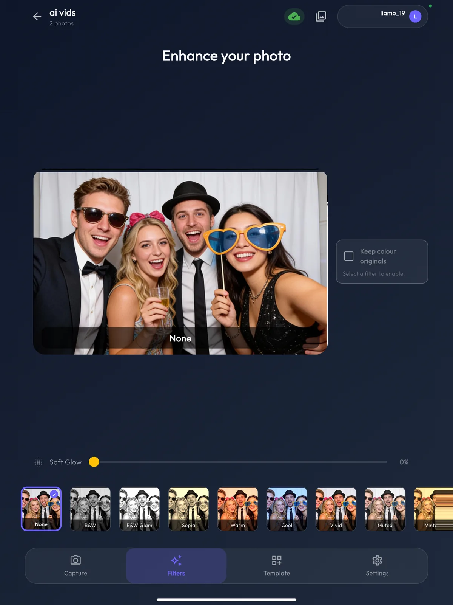
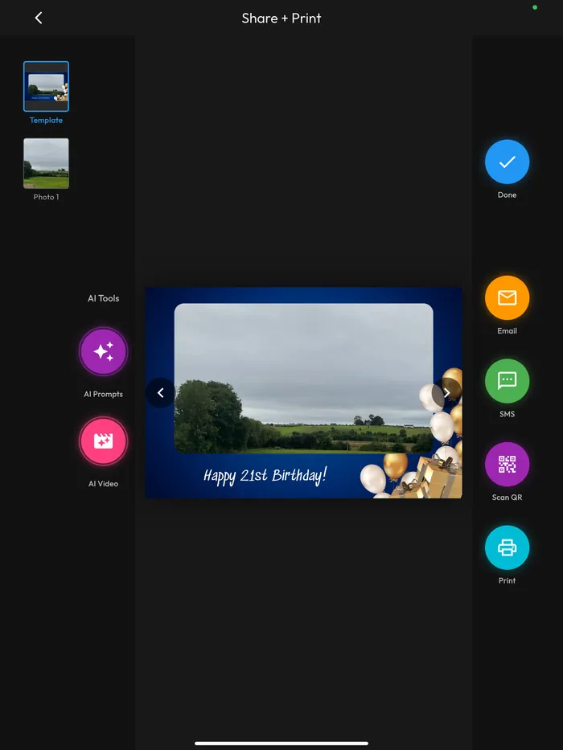
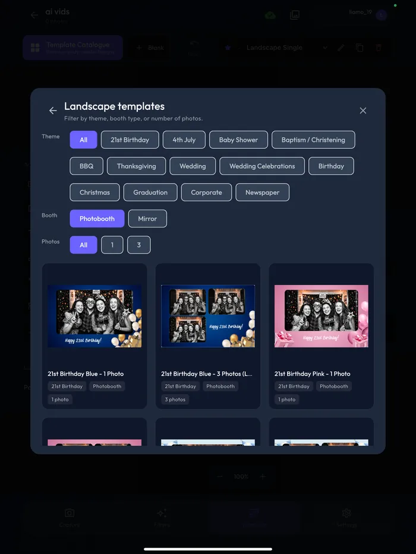
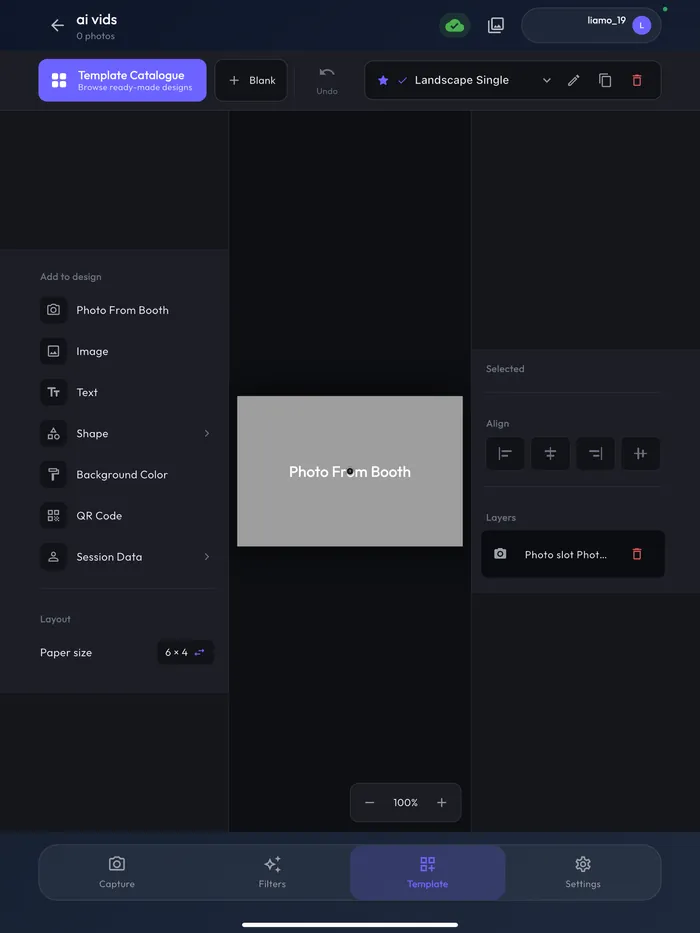
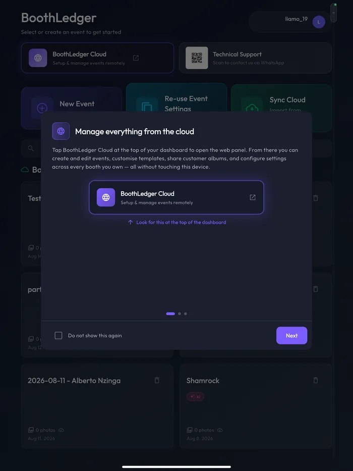

BoothLedger turns an iPad into a professional photo booth — live view, countdown, filters, boomerangs, AI effects, custom print templates and instant SMS, email and QR sharing. Tether a Canon DSLR over USB for studio-grade shots, print over AirPrint, and run it all on the same account as BoothLedger for Windows.

An iPad photo booth app replaces the PC, the capture software and the sharing kiosk with a single touchscreen. BoothLedger handles the whole guest flow — attract screen, countdown, capture, filters, template, print and digital share — and syncs everything to your cloud dashboard.
Build the event on BoothLedger Cloud or on the iPad itself — templates, filters, AI styles, sharing options. At the venue, sign in, tap the event and the booth is live. Test mode keeps your setup shots out of the guest album.
Photos, boomerangs and video from the iPad's cameras — or tether a Canon DSLR over USB for studio-grade stills with live view on the iPad screen. Guests pick filters, AI styles and layouts on the touchscreen.
Finished photos drop into your branded template and go out instantly — SMS, email or QR to the guest's phone, AirPrint for hard copies, and cloud sync for the hosted online gallery.
Real screens from the BoothLedger iPad photo booth app — the guest flow, the template tools and the cloud dashboard behind them.




Everything the Windows booth does, rebuilt for the iPad — and a few things only an iPad can do.
Plug a Canon EOS DSLR or mirrorless into the iPad and shoot tethered — live view on the touchscreen, full-resolution stills in the booth. DSLRs with a webcam mode also work as UVC cameras on iPadOS 17+. DSLR photo booth software →
Print full-bleed 4×6 photos and 2×6 strips wirelessly over AirPrint with calibrated, edge-to-edge layouts. No print server, no driver installs — the iPad talks straight to the printer.
The full BoothLedger AI suite on iPad — guests pick a style, the AI restyles their photo, and AI video brings it to life. The same AI events you run on Windows. See the AI photo booth →
Pick from the ready-made catalogue or design your own on the iPad — photo slots, text, logos, shapes and QR codes, drag-and-drop with your finger. Templates sync from BoothLedger Cloud, so desktop edits appear on the booth.
Photos, boomerangs and short video clips from one capture screen. Pinch to zoom on the live view, just like the native camera — guests already know how to use it.
Guests grab their photo on their own phone in seconds — big on-screen keypads built for kiosk use, no fiddly OS keyboard. Every share lands in the hosted cloud gallery too.
Events, templates and settings live in BoothLedger Cloud. Build at home, shoot at the venue, and hand the host a hosted gallery link when it's over — the same dashboard that powers the Windows booth.
Events start in test mode so setup shots stay out of the guest album — go live with one tap when doors open. A 4-digit operator PIN locks settings, fullscreen exit and the whole booth while you step away.
Templates and settings cache on the device, uploads queue and drain in the background, and the booth keeps capturing when the connection drops. Weak hotel Wi-Fi doesn't stop the show.
The iPad app isn't a cut-down companion — it's the same booth. One subscription, one cloud dashboard, the same events, templates and galleries on whichever hardware the job calls for. Run your flagship Windows rig at the gala and drop an iPad booth at the second room — both feed the same event gallery.
iPad, stand, ring light — a booth that sets up in ten minutes and travels as hand luggage. Perfect for tight venues, mezzanines and multi-room events where a full rig won't fit.
Boomerangs, filters and a guest album the couple browses the next morning. Pairs with wedding photo booth software workflows you already run on Windows.
Branded templates, AI styles and instant social sharing on a device that looks at home in a showroom. See brand activation booths →
Tether the Canon over USB when the client wants studio-grade prints; switch to the iPad's cameras when speed and simplicity win. Read DSLR vs iPad booths →
The app runs on iPhone too — a roaming booth in your pocket, or a backup device that signs into the same event if hardware fails mid-shift. See roaming photography →
Add a second iPad running BoothLedger Share as a dedicated sharing kiosk — guests browse, send and print while the booth keeps shooting.
14-day free trial — full capture modes, templates, AirPrint, sharing and cloud sync. No credit card. One account covers Windows and iPad.
An iPad photo booth app turns a standard iPad into a full event photo booth: it runs the live camera view, countdown, capture, filters, print templates and guest sharing from one touchscreen. BoothLedger's iPad app does all of that plus Canon DSLR tethering, AirPrint printing, AI effects and cloud gallery sync — so a booth that used to need a PC and a monitor now fits in a bag.
Yes. BoothLedger tethers Canon EOS DSLR and mirrorless cameras to the iPad over a USB cable, with live view on screen and full-resolution stills delivered straight to the app. DSLRs that offer a webcam mode also work as UVC cameras on iPadOS 17 and later. The iPad's own front and back cameras are supported out of the box.
Yes. BoothLedger prints from the iPad over AirPrint to compatible photo printers, using calibrated, full-bleed 4×6 and strip layouts. Guests can also grab every photo digitally by SMS, email or QR code seconds after capture, and prints can be routed to a connected BoothLedger Share sharing station.
Yes. Event settings and print templates are cached on the device, captures queue locally and upload in the background when the connection allows, and the booth keeps shooting even when venue Wi-Fi drops. Digital sharing resumes automatically once the iPad is back online.
BoothLedger runs on iPads with iPadOS 15 or later. A recent iPad with a USB-C port is recommended, especially for Canon DSLR tethering. The app also runs on iPhone with a layout adapted to the smaller screen — handy as a roaming booth or backup device.
Yes. One BoothLedger account signs in on Windows and iPad. Events, print templates, AI settings and galleries live in BoothLedger Cloud, so you can build an event on your desktop and open it on the iPad at the venue — or run a Windows booth and an iPad booth side by side at the same event. Curious how we compare to iPad-only apps? See BoothLedger vs LumaBooth →
BoothLedger’s Photobooth plan starts at €20/month; the AI Photobooth plan at €35/month adds AI effects and AI video. Both include a free 14-day trial with no credit card required, and both cover the Windows software and the iPad app on the same account — see the full pricing page →
Straight from the booth screen: SMS, email or a QR code that opens the photo on the guest’s own phone, plus an AirPrint hard copy if you’re printing. Everything also syncs to a hosted online gallery on BoothLedger Cloud, so guests and hosts can browse and download after the event.